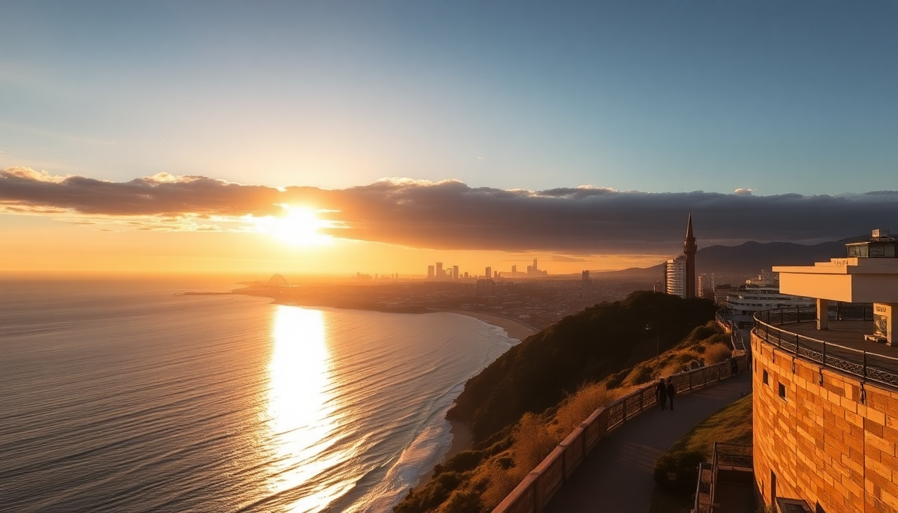

14-Day Australia Itinerary: Sydney, Melbourne, Cairns & Uluru

We just finished two weeks hopping between Sydney, Melbourne, Cairns, and Uluru. It’s a lot of ground, but with domestic flights and a bit of planning, it’s doable without losing your mind. This guide covers the exact route we took, where we stayed, what we actually ate, and what we’d skip next time.
How do you get between these four cities efficiently?
Domestic flights are the only realistic option. We booked Jetstar and Virgin Australia—both were fine for short hops. The Sydney-to-Melbourne leg is only 90 minutes, and Cairns to Uluru (Ayers Rock Airport) took about three hours with a quick stop in Alice Springs. Book early; prices jump fast.
We used Qantas for the Melbourne-to-Cairns flight, which was smoother than Jetstar, but pricier. For luggage, Jetstar charges extra for checked bags, so we packed carry-on sized duffels and washed clothes mid-trip.
What should you do in Sydney beyond the Opera House?
Start in Circular Quay—it’s the tourist epicenter, but for good reason. The Sydney Opera House tour is worth the hour, but skip the overpriced cafes inside. Instead, walk five minutes to The Rocks and grab a flat white at The Fine Food Store. For the bridge, don’t pay for the climb; we walked across the Sydney Harbour Bridge on the pedestrian path for free and got the same photos.
- Bondi to Coogee coastal walk: 6 km, stunning cliffs, and you hit Bondi Icebergs pool for a dip. Do it early (before 8 AM) to avoid crowds.
- Surry Hills for dinner: Bills for ricotta hotcakes (yes, they’re worth it) and Porteño for Argentine steak—book a week ahead.
- Manly Ferry from Circular Quay: $10 round trip, better value than the tourist harbor cruises.
We stayed at The Old Clare Hotel in Chippendale—a converted pub with a pool and rooftop bar. Not cheap, but quieter than Darling Harbour.
Is Melbourne really the food capital of Australia?
Yes, but you have to know where to go. Skip the chain-heavy Southbank and head to Fitzroy and Collingwood. We ate at Lune Croissanterie (the original in Fitzroy) at 7:30 AM to beat the line—the almond croissant is as good as Paris. For dinner, Attica is famous but impossible to book; we settled for Embla in the CBD, which does wood-fired small plates and natural wine without the hype.
- Queen Victoria Market: Go on a Wednesday night for the summer night market (oysters, dumplings, live music). Daytime is good for fresh produce and cheap souvenirs.
- Flinders Street Station to St Kilda via tram 16: Free within the city zone, and you end up at St Kilda Beach to see the little penguins at sunset.
- Hosier Lane for street art: It’s a five-minute walk from Flinders, and the art changes weekly. Take photos, but don’t linger—it smells like alley.
We stayed at The Larwill Studio in Parkville—close to the tram, quiet, and had a kitchenette for breakfasts. Avoid the serviced apartments near Docklands; they’re dead after 6 PM.
Can you do Cairns without a tour bus?
We did, and it was cheaper. Skip the group tours that herd you to souvenir shops. Instead, rent a car from Hertz at Cairns Airport and drive yourself to Kuranda via the Kuranda Scenic Railway (one-way ticket, $50) and drive back via the Kuranda Range Road. The railway is touristy but the views over the Barron Gorge are legit.
- Great Barrier Reef: Book a snorkel-only trip with Reef Magic (smaller boat, fewer people). We saw turtles and clownfish within 20 minutes of leaving Cairns Marina. Avoid the island resorts—they’re overpriced and the reef is better on the outer edge.
- Daintree Rainforest: Drive north to Mossman Gorge for a self-guided walk (free, just pay for parking). The Daintree River Cruise for crocs is worth it—we used Solar Whisper, a quiet electric boat that doesn’t spook the animals.
- Night market on Esplanade: Grab a $10 bag of mangoes and a pad thai from the food stalls. It’s not fine dining, but it’s real.
We stayed at Cairns Central YHA—clean, central, and $40 a night for a private room. Splurge on Pullman Reef Hotel Casino if you want a pool and ocean views, but we didn’t miss it.
Is Uluru worth the travel hassle?
Yes, but only if you do it right. Fly into Ayers Rock Airport (Yulara), not Alice Springs—Alice is a 4-hour drive through nothing. We booked a sunset tour with Uluru Express (small group, $89 per person) that took us to the Talinguru Nyakunytjaku viewing area for the color change. Skip the sunrise tour; it’s colder and the light is better at dusk.
- Base walk around Uluru: 10.6 km, flat, and takes about 3 hours. Do it at 6 AM to beat the heat. Bring 2 liters of water per person. Do not climb the rock—it’s culturally disrespectful and closed anyway.
- Kata Tjuta (the Olgas): The Valley of the Winds walk is harder than the base walk (rocky, steep), but the red domes are more dramatic than Uluru itself. Allow 4 hours.
- Field of Light installation: $45 per person, but it’s a 30-minute walk through 50,000 solar-powered lights. We thought it was overrated—nice photos, but not worth the price. Skip it if you’re on a budget.
We stayed at Desert Gardens Hotel inside the resort—the only option unless you camp. It’s fine: clean, air-conditioned, and a pool. The resort is a monopoly (everything is overpriced), so we ate at the Geckos Cafe for burgers ($20) and brought snacks from Cairns.
How do you handle the heat and time zones?
Cairns is humid and hot year-round (we sweated through every shirt). Uluru is dry heat but can hit 40°C (104°F) in summer. Melbourne and Sydney are temperate—we needed a light jacket in October. Keep a reusable water bottle and a wide-brim hat in your daypack.
Time zones: Sydney and Melbourne are on AEST (UTC+10). Cairns is also AEST. Uluru is ACST (UTC+9:30)—that half-hour difference will mess with your flight connections. We set our watch to local time on arrival and double-checked flight boarding passes.
FAQ
How many days should you spend in each city? We did 4 days Sydney, 3 days Melbourne, 4 days Cairns, 3 days Uluru. That gave us enough time for the main attractions without rushing. If you have to cut one, drop Melbourne—it’s great, but Sydney and Cairns are more unique for first-timers.
Is it safe to drive in the Outback between Cairns and Uluru? Don’t do it. It’s 3,000 km of straight road with no cell service, extreme heat, and limited fuel stops. Fly. The domestic flights are short and cheap enough that it’s not worth the risk.
What’s the best time of year for this itinerary? April to October—winter and spring in Australia. Avoid December to February (summer) because Cairns gets cyclones and Uluru hits unbearable heat. We went in October and had perfect weather everywhere: 22°C in Sydney, 25°C in Melbourne, 28°C in Cairns, and 30°C in Uluru.
Conclusion
- Book domestic flights early (Jetstar and Virgin Australia) to keep costs under $200 per leg.
- Stay in walkable neighborhoods: Surry Hills (Sydney), Fitzroy (Melbourne), Esplanade (Cairns), and the resort village (Uluru).
- Eat at local markets and avoid hotel restaurants—Queen Victoria Market and Cairns Night Market are budget-friendly.
- Do the base walk at Uluru and the outer reef snorkel in Cairns; skip the Field of Light and the Kuranda Railway round trip.
- Pack layers for Sydney/Melbourne and a hat for Cairns/Uluru—the climate swings are real.